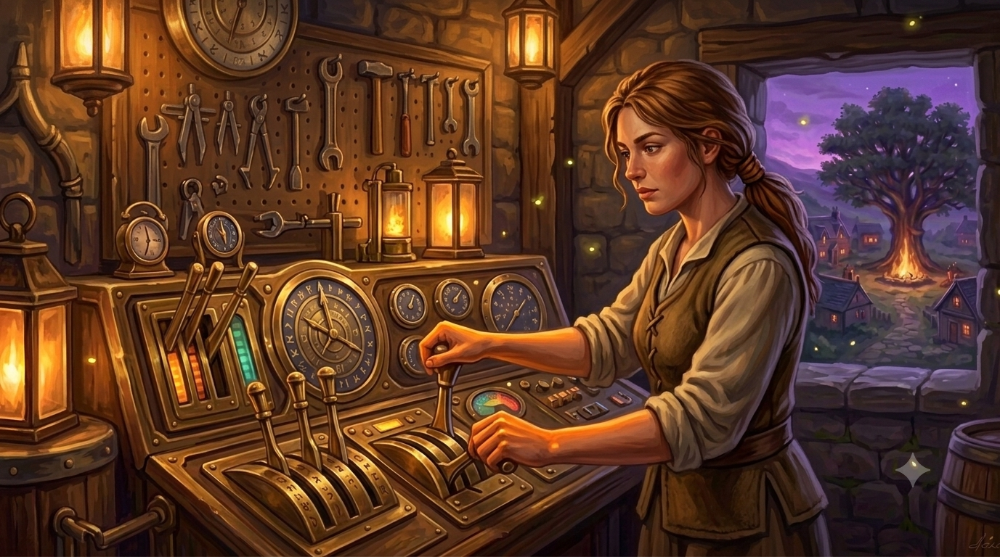

The hand at the controls. The junior-operated layer that lets the village run without a founder on every lever: the assessment platform, the checkout, the pipeline and the data tooling, all configured and run under the Deep Vault rules.
A VA-and-platform role, not a founder one. The Operator keeps the machinery turning day to day so Rachel's and Scott's time goes to the work only they can do. The point of the seat is scale without heroics: the more the Operator can run safely, the less the village depends on the two people at the top.
Configures and runs the VQ Assessment and companion questionnaire on the platform, capture clean and on schedule.
The product checkout, the funnel mechanics and the member journeys that carry a villager up the Spectrum.
The inbound pipeline and its tooling, kept tidy so the warm conversations reach the right seat.
Recording, transcription and the research store, stood up and held to the retention schedule.
The Operator works inside the IG playbook, not around it. Tooling stays unchosen until the reviewer has seen the processor map (Play 2); pseudonymisation happens on schedule, not when convenient (Play 8); audio is deleted by rule (Play 13). The seat is trusted with the controls precisely because the controls are governed. ⚑ Actor placement still to confirm as the platform stack settles.